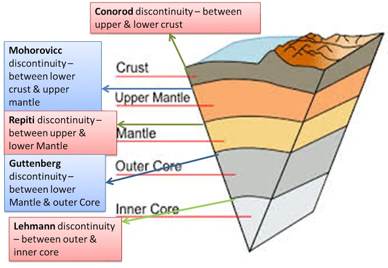
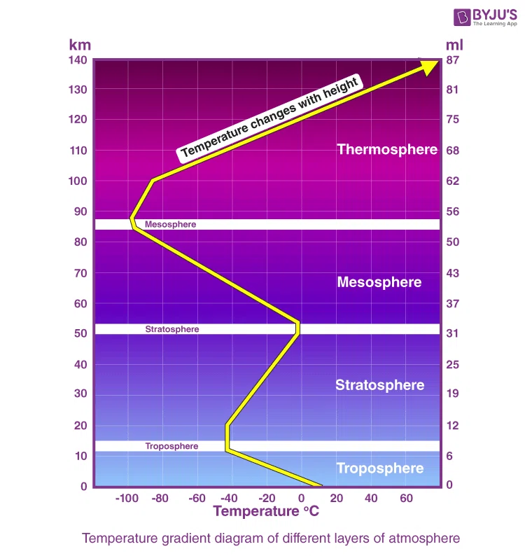
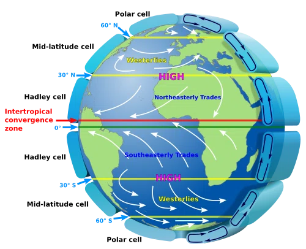
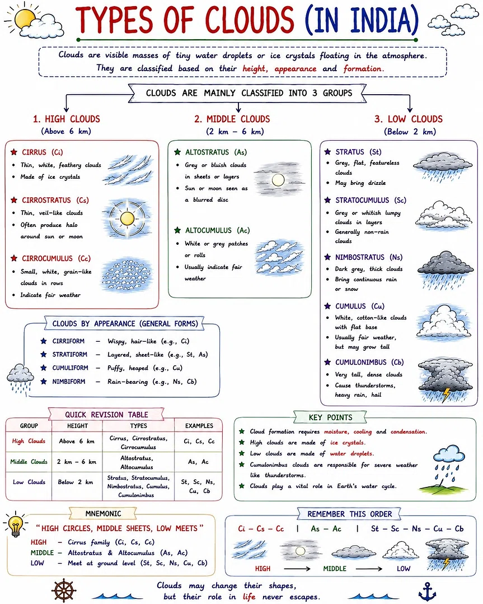

Physical Geography: Earth, Atmosphere & Weather
Interior of the Earth · Atmosphere composition & layers · Atmospheric cells · Clouds · Cyclones · Slash & Burn — tap to reveal.
1 · Interior of the Earth — Layers & Discontinuities
Tap each layer to reveal its discontinuity and key facts.
Crust Layer
Outermost solid layer. Two types: Continental (granite, thicker) and Oceanic (basalt, thinner).
Mantle Layer
Thickest layer (2900 km). Divided into Upper and Lower Mantle. The Asthenosphere lies here.
Core Layer
Divided into Outer Core (liquid, iron-nickel) and Inner Core (solid, iron-nickel).
"Conorod → Moho → Repiti → Gutenberg → Lehmann"
"Crust-Moho-Mantle-Repiti-Mantle-Gutenberg-Core-Lehmann-Core"

2 · Composition of the Atmosphere
Tap the list to reveal the exact percentages.
- Nitrogen (N₂) 78.08%
- Oxygen (O₂) 20.95%
- Argon (Ar) 0.93%
- Carbon Dioxide (CO₂) 0.038%
- Neon (Ne) 0.0018%
- Helium (He) 0.0005%
- Krypton (Kr) 0.0001%
- Xenon (Xe) 0.000009%
- Hydrogen (H₂) 0.00005%
3 · Layers of the Atmosphere — Temperature Gradient
Tap each layer to reveal its height, temperature trend, and key features.
Temperature: Decreases with height (approx. -6.5°C per km).
Key features: Weather phenomena (clouds, rain, storms) occur here. Contains ~75% of atmospheric mass. Called the "weather layer".
Temperature: Increases with height (due to ozone layer absorbing UV).
Key features: Contains the Ozone Layer. Ideal for jet aircraft flying (smooth, no weather).
Temperature: Decreases with height (coldest layer, down to -90°C).
Key features: Meteors burn up here. Called the "meteor layer".
Temperature: Increases sharply with height (up to 1500°C).
Key features: Contains the Ionosphere (radio communication) and the Exosphere (satellites orbit here). Auroras occur here.
"Troposphere (down), Stratosphere (up), Mesosphere (down), Thermosphere (up)"
"T-S-M-T = Down-Up-Down-Up"

4 · Atmospheric Cells — Global Wind Circulation
Tap each cell to reveal its location, mechanism, and resulting winds.
Location: Tropical region (Equator to 30° latitude).
Mechanism: Thermally direct — driven by intense solar heating at the equator. Air rises at the equator (ITCZ) and sinks at the subtropics (30°).
Surface Winds: Generates the Trade Winds (Easterlies) — blowing from 30° towards the equator.
Location: Mid-latitude region (30° to 60° latitude).
Mechanism: Thermally indirect (dynamic) — driven by the neighbouring Hadley and Polar cells. Air sinks at 30° and rises at 60°.
Surface Winds: Generates the prevailing Westerlies — blowing from 30° towards 60°.
Location: High-latitude region (60° to 90° latitude).
Mechanism: Thermally direct — driven by extreme cold at the poles. Cold air sinks at the poles and flows equatorward.
Surface Winds: Generates the Polar Easterlies — blowing from 90° towards 60°.
"Trade Winds (0-30) · Westerlies (30-60) · Polar Easterlies (60-90)"
"Trade, West, Polar — T-W-P"

5 · Types of Clouds — Classification & Characteristics
Clouds are classified by height and appearance. Tap each group to reveal details.
| Group | Height | Types | Characteristics |
|---|---|---|---|
| High Clouds | Above 6 km | Cirrus (Ci), Cirrostratus (Cs), Cirrocumulus (Cc) | Thin, wispy, made of ice crystals. Indicate fair weather. |
| Middle Clouds | 2 – 6 km | Altostratus (As), Altocumulus (Ac) | Grey/bluish sheets or patches. Usually indicate fair weather (Ac) or approaching rain (As). |
| Low Clouds | Below 2 km | Stratus (St), Stratocumulus (Sc), Nimbostratus (Ns), Cumulus (Cu), Cumulonimbus (Cb) | Grey, flat, or puffy. Ns brings continuous rain. Cb causes thunderstorms, heavy rain, hail. |

"High Circles, Middle Sheets, Low Meets"
• High: Cirrus family (Ci, Cs, Cc)
• Middle: Altostratus & Altocumulus (As, Ac)
• Low: Stratus family (St, Sc, Ns, Cu, Cb)
6 · Cyclones — Regional Names Around the World
Tap each region to reveal its local name for a cyclone.
7 · Slash & Burn Cultivation — Names in India & the World
Tap each state/country to reveal its local name.
Slash & Burn — World Names
8 · Rapid Fire
Answer out loud, then tap to check.
Which discontinuity separates the crust and the mantle?
Which discontinuity separates the mantle and the outer core?
Which discontinuity separates the outer core and the inner core?
Which gas is most abundant in the Earth's atmosphere?
In which layer of the atmosphere does weather occur?
Which layer contains the ozone layer?
In which layer do meteors burn up?
Which atmospheric cell generates the Trade Winds?
Which atmospheric cell generates the Westerlies?
Which atmospheric cell generates the Polar Easterlies?
What are the three high clouds?
Which cloud brings continuous rain?
Which cloud causes thunderstorms and hail?
What is a cyclone called in the Caribbean Sea?
What is a cyclone called in the China Sea?
What is a cyclone called in Northern Australia?
What is slash-and-burn cultivation called in North-Eastern India?
What is slash-and-burn cultivation called in Mexico?
Tip: Use "Hide all" before a session, then "Reveal all" to check. The discontinuities and atmospheric cells are the most heavily tested — go through the rapid-fire twice.